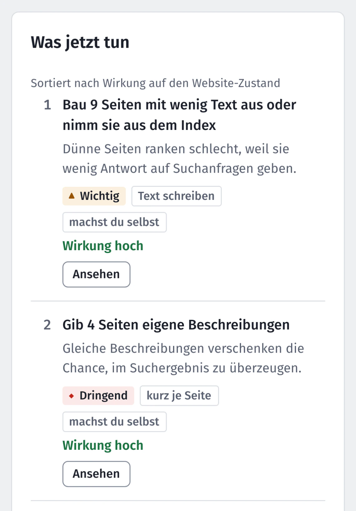
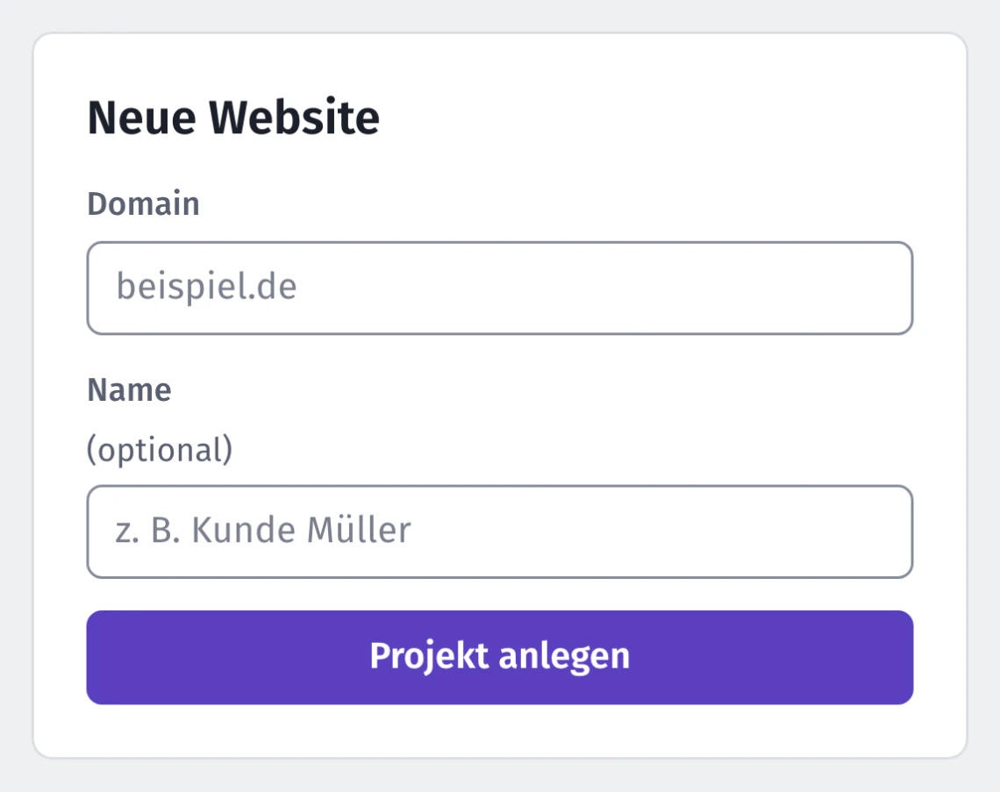
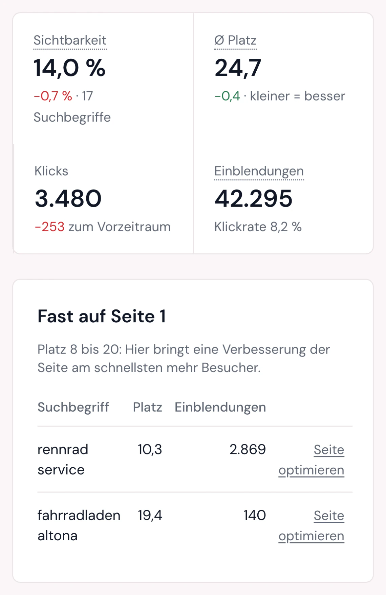
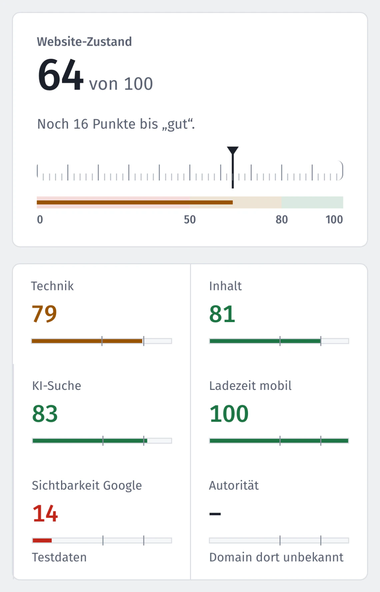

Häufige Fragen
Kurze Antworten, auch auf die unbequemen Fragen.
Grundsätzliches

Was ist Nextfix?
Ein SEO-Tool, das auf deinem eigenen Rechner läuft. Es prüft deine Website und macht aus den Ergebnissen eine kurze Liste: was du zuerst tust, warum, wie und wer es erledigt. Dazu kommen Ladezeit, Positionen bei Google und Bing, Suchbegriffe und Tipps für einzelne Seiten.
Kostet Nextfix wirklich nichts?
Ja. Der Quellcode ist offen (MIT-Lizenz), es gibt kein Abo und keine bezahlten Schnittstellen. Die Daten kommen von deiner Website, aus der Google Search Console und von Bing; beide Dienste sind kostenlos. Für die Domain-Autorität brauchst du einen kostenlosen Schlüssel von Open PageRank.
Für wen ist Nextfix gedacht?
Für alle, die ihre Website selbst pflegen oder pflegen lassen und kein Budget für SEO-Software haben: Freiberufler, Handwerker, kleine Firmen, Vereine. Fachbegriffe werden erklärt, Aufgaben stehen in ganzen Sätzen.
Ersetzt Nextfix eine Agentur?
Nein. Nextfix sagt dir, was zu tun ist und ob du es selbst im CMS erledigen kannst oder dein Webbetreuer ran muss. Die Arbeit selbst bleibt bei euch. Dafür weißt du genau, was du beauftragst.
Wer steckt dahinter?
Nextfix ist ein privates Open-Source-Projekt von the-neyro, entwickelt öffentlich auf GitHub. Kein Unternehmen, keine Werbung, kein Verkauf von Daten. Diese Website stellt das Programm vor und ist zugleich sein Testfall: An ihr wird Nextfix an einer echten Website erprobt. Kontakt: neyro.devs@gmail.com oder ein Issue auf GitHub.
Installation und Technik

Muss ich programmieren können?
Nein. Zum Installieren fügst du eine Zeile ins Terminal ein, oder dein Webbetreuer macht das. Danach startest du Nextfix auf dem Mac und unter Windows per Doppelklick, unter Linux mit einem Befehl, und bedienst es im Browser. Die Anleitung erklärt jeden Schritt.
Kann ich die Installationszeile bedenkenlos ausführen?
Die Zeile lädt ein Skript von GitHub und führt es aus. Das solltest du bei keinem Programm blind tun, deshalb kannst du es vorher komplett lesen. Es braucht keine Admin-Rechte, legt alles im Ordner nextfix ab (nur Chromium landet im Cache von Playwright), richtet nichts ein, das von selbst startet, und schickt nichts über dich irgendwohin. Was es Schritt für Schritt tut, steht auf der Seite Installation. Der ganze Quellcode ist öffentlich (MIT-Lizenz). Lieber nichts im Terminal ausführen? Dann gib die Anleitung deinem Webbetreuer.
Läuft das auch unter Windows?
Nextfix wird auf dem Mac entwickelt. Unter Mac und Linux laufen alle 313 automatischen Tests durch. Unter Windows funktionieren Installation, Start per Doppelklick und Prüfen; das wird bei jeder Änderung automatisch geprüft. Offiziell unterstützt ist Windows trotzdem noch nicht, weil dort einzelne Tests gelegentlich scheitern. Wenn du es ausprobierst, freut sich das Projekt über eine Rückmeldung auf GitHub.
Kann ich auch fremde Websites prüfen?
Ja, der Website-Check braucht keinen Zugang, nur die Adresse. Der Crawler ruft die Seiten nacheinander ab, nicht parallel, und hält sich standardmäßig an die robots.txt. Positionen gibt es nur für Websites, deren Search Console du verbunden hast.
Was ist MCP, und brauche ich Claude?
Nein, die Oberfläche im Browser reicht. MCP ist eine Schnittstelle, über die Claude Programme bedienen kann. Nextfix bietet dort 51 Werkzeuge an. Wer Claude nutzt, kann dann im Chat sagen: „Prüf meine Website und erklär mir die drei wichtigsten Aufgaben.“
Daten und Datenschutz

Wohin gehen meine Daten?
Deine Ergebnisse bleiben auf deinem Rechner, in einer einzigen Datei (data/seo.db). Nach außen geht nur, was für eine Abfrage nötig ist: Nextfix ruft deine Website ab, holt für Suchbegriff-Ideen die Vorschläge beim Tippen von Google und, wenn du es einrichtest, Daten von Search Console, Bing und Open PageRank. Kein Konto bei Nextfix, kein Tracking.
Fragt Nextfix Google-Suchergebnisse ab?
Nein. Nextfix liest keine Suchergebnisse aus. Deine Positionen kommen aus der Search Console und von Bing, also aus den Daten, die dir als Website-Betreiber ohnehin zustehen. Für Suchbegriff-Ideen fragt es in kleinem Umfang die Vorschläge beim Tippen ab; das ist keine offizielle Schnittstelle von Google.
Fachwörter kurz erklärt
Die Wörter, die in Nextfix und in den Aufgaben vorkommen, in einem Satz.
- Seitentitel (Title)
- Der Name einer Seite im Browser-Tab und die blaue Überschrift bei Google.
- Beschreibung (Meta-Description)
- Der kurze Text unter dem Titel bei Google. Er entscheidet mit, ob jemand klickt.
- Index
- Die Liste aller Seiten, die Google kennt und zeigen kann. „Aus dem Index nehmen“ heißt: Google soll die Seite nicht zeigen (noindex).
- Sitemap
- Eine Datei mit allen Adressen deiner Website, damit Suchmaschinen sie schneller finden. Meistens erstellt dein CMS sie selbst.
- 404
- Die Antwort „Seite nicht gefunden“. Passiert, wenn eine Seite gelöscht wurde, aber noch Links darauf zeigen.
- Weiterleitung (301)
- Eine alte Adresse schickt Besucher automatisch zur neuen. Richtig, wenn eine Seite umzieht.
- H1
- Die Hauptüberschrift einer Seite. Jede Seite sollte genau eine haben.
- Alternativtext (alt)
- Eine kurze Beschreibung eines Bildes für Menschen, die es nicht sehen, und für die Bildersuche.
- CMS
- Das Programm, mit dem du deine Website pflegst, zum Beispiel WordPress, Wix oder Jimdo.
- Search Console
- Ein kostenloser Dienst von Google, der dir zeigt, bei welchen Suchbegriffen deine Seiten erscheinen.
Ergebnisse verstehen

Was bedeutet der Website-Zustand?
Eine Zahl von 0 bis 100, die zeigt, wie viele und wie schwere Probleme gefunden wurden. Ab 80 gilt eine Website als gut gepflegt, unter 50 gibt es mehrere grobe Fehler. Ein Fehler auf vielen Seiten wiegt schwerer als einer auf einer einzelnen Seite.
Die Zahl sagt nichts darüber, auf welchem Platz du bei Google landest. Sie ist ein Maß für den Pflegezustand, nicht fürs Ranking.
Warum gibt es keine Punkte je Aufgabe?
Weil niemand seriös vorhersagen kann, was eine Behebung bei Google bringt. Eine Angabe wie „+4,2 Punkte“ täuscht Genauigkeit vor. Nextfix sortiert die Aufgaben trotzdem nach ihrem Gewicht und zeigt die Wirkung in drei Stufen: hoch, mittel, gering.
Was heißt „Bewusst so“?
Manches ist Absicht: eine Login-Seite ohne Text, ein Impressum ohne Beschreibung. Markierst du ein Problem, eine Seite oder eine einzelne Fundstelle als „Bewusst so“, zählt es nicht mehr im Zustand und taucht nicht in den Aufgaben auf. Du kannst es jederzeit zurücknehmen.
Was kann Nextfix nicht?
Es zeigt keine Positionen deiner Konkurrenz und keine einzelnen Backlinks, dafür bräuchte es bezahlte Datenbanken. Die Ladezeit misst es im Labor auf deinem Rechner, nicht bei echten Besuchern.